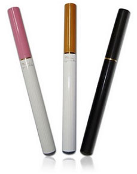
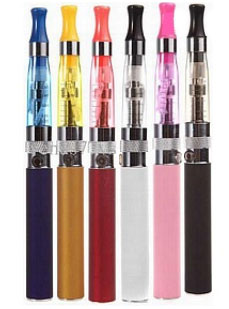
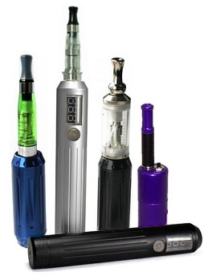

Los cigarrillos electrónicos están disponibles en una gran variedad de formas y tamaños y están diseñados para satisfacer a cualquier tipo de usuario. Si acaba de llegar al mundo de los e-cigarrillos, el proceso de intentar elegir el dispositivo adecuado puede resultar un poco abrumador pero, prácticamente todos los e-cigarrillos se pueden dividir en tres categorías principales: mini, mediano y mod.
Mini (es decir, parecido a un cigarrillo tradicional).
Para aquellos usuarios que están dando sus primeros pasos en el mundo de los e-cigarrillos, los minis son la opción ideal, ya que proporcionan una sensación más natural y hacen que el paso de fumar cigarrillos tradicionales a usar e-cigarrillos sea más fácil de dar, pues tienen su mismo aspecto y dan la misma impresión. Un mini (que también recibe el nombre simblemente de “e-cig”) es una opción pequeña y ligera, que proporciona a los usuarios un medio cómodo y discreto para obtener la dosis de nicotina que necesitan. Este tipo de cigarrillos electrónicos están enormemente extendidos y se pueden obtener prácticamente en cualquier parte. Además, existen minis tanto desechables como recargables.
E-cigarrillos de tamaño medio y Vape Pens (eGo)
Para los usuarios intermedios, los modelos de mediano tamaño son la opción más popular, dado que siguen siendo relativamente pequeños (tienen más o menos el tamaño de un puro) pero tienen una autonomía mayor y producen más vapor. A los fumadores más empedernidos les solemos recomendar que empiecen directamente con un modelo de mediano tamaño desde el principio, dado que tienen un rendimiento mucho mejor y les satisfará mucho más que un mini. Entre los modelos más populares se encuentran el eGo, EVOD y kGo. La mayoría de estos modelos están basados en el diseño 510 de tres piezas, aunque algunos proceden del KR808 de dos piezas. A diferencia de los minis, que están disponibles en formato automático o manual, la mayoría de los modelos medianos funcionan de forma manual presionando un botón para vapear. Aunque el uso de estos dispositivos puede hacer que la experiencia de fumar pueda ser algo distinta de la tradicional, proporcionan al usuario un mayor control y tienen un rendimien
APVs o Mods
Los vaporizadores personales o MODs proporcionan a los usuarios la experiencia definitiva. Un APV tiene habitualmente el aspecto de un tubo grueso que parece una linterna (un tubemod) o de una caja del tamaño de un paquete de cigarrillos (un boxmod). A diferencia de los minis o de los diseños medianos, que usan una batería preempaquetada cilíndrica, los mods suelen utilizar células reemplazables de litio de 3.7 voltios e incorpora funciones que no encontrará en otros dispositivos. Por ejemplo, tienen una alimentación líquida integral, tanques de diferentes estilos, lecturas digitales, voltaje variable, un control electrónico completo y otras muchas características.
Las principales ventajas que tienen los APVs son el rendimiento que proporcionan sus grandes baterías y las funciones avanzadas que permiten a los usuarios controlar totalmente todos los aspectos de este dispositivo.
Dado que necesita un cierto nivel de experiencia para apreciar las complejidades que presenta un APV, los principiantes deberían empezar utilizando un mini o un mediano primero para familiarizarse con el uso de los cigarros electrónicos. En general, los novatos tienden a mantenerse alejados de los MODs porque los consideran demasiado grandes o complejos para ellos. No solo se controlan de forma manual, sino que los novatos pueden no entender las complejidades de su configuración, por lo que es mejor dejarlos para más adelante. Pero, pese a todo esto, tienen un rendimiento magnífico, por lo que resultan muy atrayentes para los usuarios más experimentados.